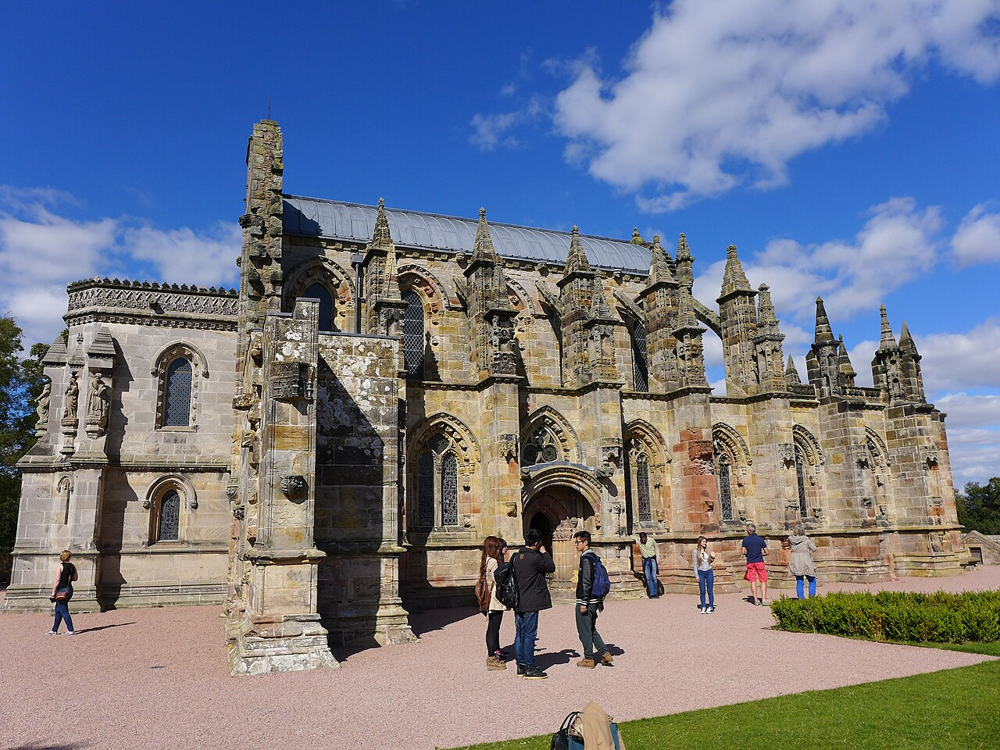

🗺️ Abrir trayecto del día en Google Maps → · de Edimburgo a St Andrews (modo auto/transit recomendado para los tramos largos).
La premisa del día
Día de transición. Las piernas duelen pero hay que moverse. Rosslyn Chapel es el pico esotérico del viaje (de hecho es el motivo por el que muchos van a Edimburgo): una capilla del s. XV con tallas misteriosas, leyendas templarias, mitología del Santo Grial, y el escenario del final del Código Da Vinci. Después: tren a Leuchars, bus a St Andrews, check-in en el aparthotel y caminata suave por West Sands beach — la playa de Carros de Fuego.
Itinerario
08:30 Desayuno largo en el hotel. Hidratar mucho. Hoy se camina poco, se viaja.
09:30 Check-out del Premier Inn. Dejar las valijas en bag-storage (gratis, hasta 12-24h). Sacar billetes electrónicos del tren a Leuchars (ScotRail, ~£12-25 ida según tarifa).
10:00 Rosslyn Chapel esoterico — el corazón del viaje. Bus 37 de Lothian Buses desde Princes Street, 30-40 min, £4.50 ida y vuelta con DayTicket. La capilla está en el pueblo de Roslin, condado de Midlothian. Audio guide gratuito incluido en la entrada (£11.50). Calcular 2 horas mínimo.
La capilla fue fundada en 1446 por William Sinclair, tercer y último Earl of Orkney, y se construyó durante 40 años. Es la Collegiate Chapel of St Matthew, pequeñísima (~10 × 13 m) y rebosante de tallas extraordinarias en cada centímetro de piedra. La tradición popular dice que los Caballeros Templarios dejaron tesoros y secretos guardados ahí cuando se disolvió la orden en 1312 — pero la conexión templaria real es debatida por historiadores serios. Robert Cooper (bibliotecario de la Grand Lodge of Scotland) escribió The Rosslyn Hoax en 2006 desmontando muchas leyendas, pero la atmósfera del lugar sobrevive cualquier escepticismo.
Lo imprescindible:
- Apprentice Pillar: el pilar más famoso. Leyenda: el maestro cantero se fue a Roma a estudiar el original; el aprendiz lo talló perfecto en su ausencia; el maestro volvió y lo mató con su mazo de un golpe. Hay efigies talladas (incluso de la madre del aprendiz llorando) que sirven de prueba narrativa.
- Tallas vegetales con cabezas verdes: 110 Green Men (figuras paganas pre-cristianas con vegetación saliendo de la boca) — el ciclo de la vida.
- Mazorcas de maíz: en una talla del techo. Polémico: la chapel se construyó 1446-1486, antes del viaje de Colón (1492). Si son mazorcas de maíz americano, implica conocimiento del Nuevo Mundo antes del descubrimiento oficial. La hipótesis “Sinclair zarpó a América en 1398” (Henry Sinclair) tiene poca evidencia documental, pero la leyenda persiste.
- Música de los cubos: 213 cubos de piedra del techo con patrones geométricos. Thomas Mitchell, músico aficionado, propuso en 2005 que los patrones codifican una melodía. La “Música de Rosslyn” se interpretó con instrumentos medievales. La interpretación es disputada pero linda.
- Cripta: bajada al sótano donde están enterrados los Sinclair. Atmósfera densa.
- Lucifer caído: pequeña figura en una columna.
- Danza Macabra de Rosslyn: una hilera de tallas de figuras danzando con esqueletos a lo largo de un arco.
Wikipedia ES · Wikipedia EN (más detallada) · Doc Channel 5 / Smithsonian.
12:30 Almuerzo en Roslin. Hay dos pubs cerca de la capilla: The Original Roslin Inn (pub histórico, dicen que Burns durmió ahí) o The Old Original (más casual). Comer simple, café fuerte. Bus de vuelta a Edimburgo.
14:30 Edimburgo Waverley Station. Retirar equipaje del hotel (5 min andando), check-in self-service del tren. ScotRail a Leuchars (línea Edinburgh ↔︎ Aberdeen): salidas cada 30-60 min, 1h05 de viaje. Sentarse del lado derecho (ventanilla con vista al mar al cruzar el Forth Bridge Patrimonio UNESCO).
16:00 Llegada a Leuchars Station. Tomar el bus 99 de Stagecoach a St Andrews: 15 min, sale cada 10-15 min desde la parada al lado de la estación. £3.20. Alternativa: taxi (£12, 10 min) si están con muchas valijas o cansados.
16:30 Check-in en Space to Stay Aparthotel St Andrews (verificar dirección exacta antes). Aparthotels suelen tener cocina — si quieren, comprar al lado en Tesco St Andrews (Bell Street) algo simple para mañana.
17:30 Caminata suave por West Sands Beach correr romantico — 3 km de arena plana, mar abierto del Mar del Norte. Es la playa donde se filmó la escena inicial de Chariots of Fire: los atletas británicos corriendo al borde del agua con la música de Vangelis. Si están con piernas duras, caminar despacio. Si Daniela tiene energía, trotada suave es ideal recovery.
19:00 Cena en un pub de St Andrews. Opciones:
- The Central (Market Street, junto a la universidad): pub mítico de estudiantes desde 1853, ales locales, comida pub honest.
- The Criterion (South Street): el más viejo de St Andrews (1875), atmósfera, pinta de Belhaven Best.
- Aikman’s Cellar Bar (Bell Street): basement bar con cervezas artesanales, ambiente íntimo.
Sin presupuesto romántico: la cena romántica especial es mañana en Seafood Ristorante.
21:30 Opcional: Eden Mill o Kingsbarns destilería. Si tienen ganas, hay tours de noche en algunas destilerías cercanas. Más realista: planear visita para mañana después del golf, o simplemente comprar una botella en el bottle shop de Luvians Bottle Shop (Market Street, una de las mejores selecciones de whisky en Escocia) — abre hasta 22:00. Probar single malts de Fife.
22:30 A dormir. Mañana es golf, tee time 10:50, hay que salir caminando del aparthotel a las 09:15.
Material para leer
Los Sinclair de Rosslyn y los Templarios
La conexión Templaria con Rosslyn es especulativa pero no del todo absurda. Los argumentos a favor:
- William Sinclair (el fundador de la capilla) descendía de Henry Sinclair, Lord de Roslin, que fue Príncipe de Orkney bajo la corona noruega. Los Orkney tenían lazos cercanos con Noruega/Escandinavia y con el norte de Francia, donde había encomiendas templarias.
- Los Caballeros Templarios fueron disueltos por el Papa Clemente V en 1312, presionado por Felipe IV de Francia. Muchos templarios huyeron — la tradición popular dice que algunos llegaron a Escocia, donde Robert the Bruce los habría recibido (Robert estaba excomulgado y necesitaba aliados).
- Rosslyn fue construida durante el período en que descendientes de templarios habrían podido tener influencia en Sinclair, sí, pero la falta de evidencia documental directa es notoria.
Los argumentos en contra:
- No hay documentos templarios en Roslin.
- Las tallas son ricamente cristianas — con elementos paganos celtas, sí, pero el corpus es católico apostólico romano.
- La leyenda templaria popular se popularizó en el s. XIX, no antes — coincidiendo con el auge del esoterismo victoriano.
- Holy Blood, Holy Grail (1982) y El Código Da Vinci (2003) cimentaron la fama esotérica, pero ambos libros son explícitamente especulativos / ficción.
Conclusión balanceada: Rosslyn es una capilla extraordinaria por motivos arquitectónicos y simbólicos reales, independientemente de la leyenda templaria. Vale la visita. La energía atmosférica del lugar es indiscutible. Lo que se interprete después es decisión personal.
Más en el track esotérico completo. Libros recomendados: The Rosslyn Hoax? (Robert Cooper, scepticista de la Grand Lodge of Scotland), Holy Blood, Holy Grail (Baigent et al., los esoteristas clásicos), The Templars and the Grail (Karen Ralls, balanceado).
Por qué West Sands y Chariots of Fire
Chariots of Fire (1981) cuenta la historia real de Eric Liddell (corredor escocés cristiano que se rehusó a correr la final de los 100m de los Juegos de París 1924 porque era domingo) y Harold Abrahams (corredor judío inglés). Ganaron oro ambos en distancias distintas.
La escena de los atletas corriendo en West Sands (la “Chariots of Fire scene” con la música de Vangelis) no representa un entrenamiento real: en la peli el equipo está entrenando para los Olympic Games de 1924, pero la escena se filmó en St Andrews porque las arenas son largas y planas. La música ganó Oscar, y “Chariots of Fire” como expresión se volvió shorthand cultural para esfuerzo deportivo.
Para Daniela, correr esos 3 km al borde del agua es canon.
El cruce del Forth Bridge
Cuando el tren cruza el Forth Rail Bridge (de 1890) entre Edimburgo y Fife, lo van a ver: una estructura de hierro forjado pintada de rojo óxido, en estilo cantilever, Patrimonio UNESCO desde 2015. Una de las primeras obras de ingeniería en hierro fundido a esa escala en el mundo. Mide 2.467 m de largo. Tarda 5 años en repintarse — y cuando terminan, empiezan de nuevo (de ahí la frase “to paint the Forth Bridge” = trabajo infinito).
Al lado están el Forth Road Bridge (1964, suspendido, peatonal hoy) y el Queensferry Crossing (2017, atirantado, autos modernos). Los tres puentes alineados son una postal de ingeniería.
Pro tip: el bus 37 a Rosslyn pasa cada 20 min en hora pico, cada 30 min fuera. Comprar el DayTicket de Lothian Buses en la app (£5) — sale más barato que pagar cada viaje por separado, y vale para toda la red de Lothian todo el día (incluido tranvía).
Si llueve
Rosslyn es interior. El tren está bajo techo. La caminata por West Sands se sufre con lluvia fuerte — alternativa: caminata corta + Tesco + cena, dejar la beach para mañana sí o sí (Daniela puede correr sola si quiere mañana mientras Matías hace el golf).
Comer y tomar hoy
The Original Roslin Inn
Pub histórico de Roslin, almuerzo simple post-capilla.The Central (St Andrews)
Pub estudiantil desde 1853 · cena casual.Luvians Bottle Shop
Una de las mejores tiendas de whisky de Escocia.Logística
- Costo aproximado: bus 37 + DayTicket £5 + Rosslyn £11.50 + almuerzo £15 + tren £20 + bus 99 £3.20 + cena £25 + (opcional botella) = ~£80 por persona.
- Caminata: 4-5 km (con piernas todavía duras de la maratón — ir despacio).
- Llevar: campera contra viento marítimo en West Sands.